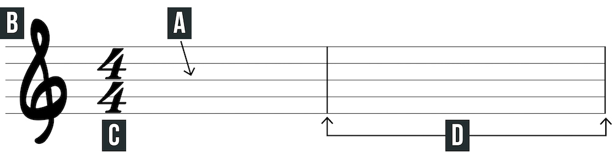
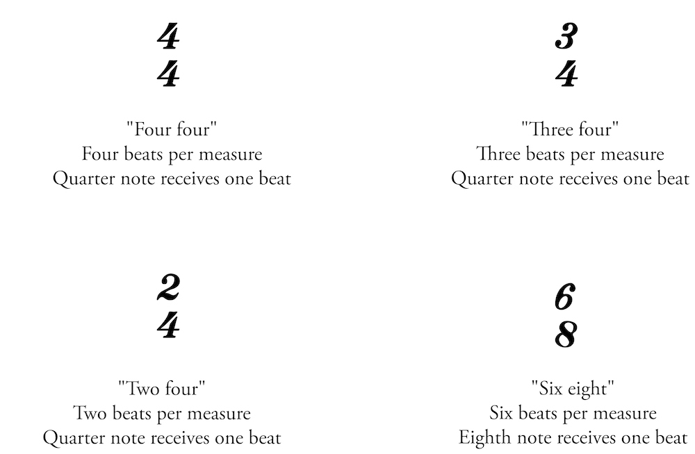

Chord diagrams and tablature may be the most common way to write music for guitar, but it is also valuable to learn standard notation as well. A basic understanding of standard notation will help to broaden your understanding of music as a whole because it is the most common way to write music for any instrument. Many guitar players never learn standard notation so learning even the basics will set you apart.
The staff is made up of five lines and four spaces. Notes and symbols are placed on the staff.
The clef determines which lines and spaces correspond with each note. It is the left-most symbol on the staff. Guitar music typically uses the treble clef (also known as the G clef). The bottom curl of the treble clef spirals around the second line from the bottom- indicating the note G. Notated guitar music is technically transposed down one octave. Guitar music will typically be transposed for you, but you may need to play notes up one octave when reading music written for another instrument.
The time signature is a symbol placed on the staff to the right of the clef. It consists of two numbers stacked on top of one another. The top number indicates the number of beats per measure while the bottom number indicates what type of note gets one beat. The most common time signature, 4/4, is so common that it is sometimes referred to as “common time.” Some other common time signatures are 3/4, 2/4, and 6/8. See the below for some time signature examples.
Bar lines are used to divide the staff into sections called bars or measures. The length of each measure is determined by the time signature.
The key signature is placed between the clef and the time signature. It tells the key of a song by showing which notes are sharp or flat. More on keys in the Lesson Seven.
An accidental alters a note so that it is outside of the key signature. Once an accidental is used, that note remains altered for the remainder of the measure. There are three types of accidentals: sharp, flat, and natural. A sharp looks like a number sign (or hashtag) and raises the note by a half-step. A flat looks like a lowercase b and lowers the note by a half-step. A natural symbol looks like a box with the left line extended up and right line extended down; it cancels out any sharps or flats from the key signature and/or accidentals used earlier in a measure.
The metronome mark indicates the tempo. The number represents beats per minute (BPM). 60 BPM is equal to one second. Use a metronome to ensure that you are playing with good time. After all, time is the most important aspect of music.
Dynamics indicate how loud or soft to play. Always make a mental note of dynamics in written music as they can make the music come to life.


Repeat signs enclose a passage of music to be played more than once. A repeat sign is a double bar line with two dots on either side of the middle line of the staff. For our purposes, optional brackets at the top and bottom of the repeat sign (shown below) help make the repeats more visible. If there is no forward-facing repeat, then repeat back to the very beginning of the piece.

Endings may be used within repeated sections. In the example above, play the first measure, the first ending, repeat back to the first measure, then play the second ending in place of the first ending.
To avoid repeatedly writing and reading notated material, symbols are used to create a “musical roadmap.” Repeats and endings are an element of the musical roadmap that you already know. Here are some additional symbols that you might see in sheet music:

Now that you know the basic system of the musical roadmap, let’s apply it to a piece of music.